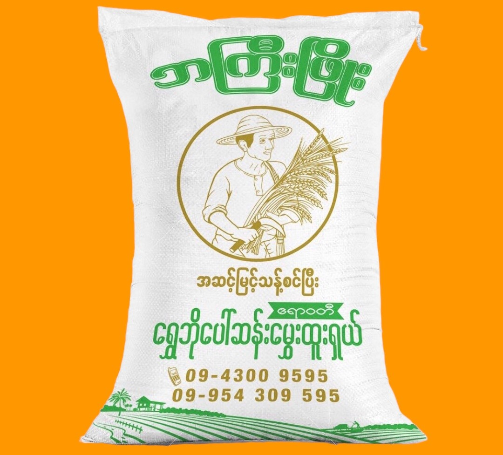
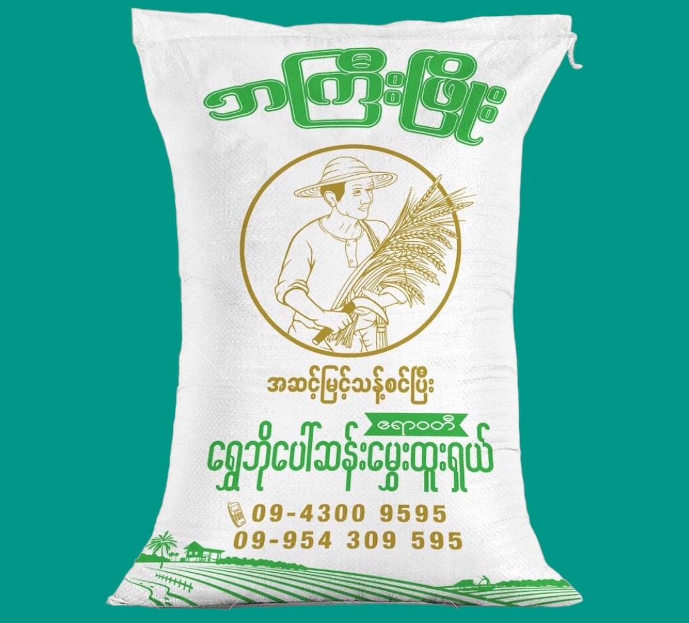
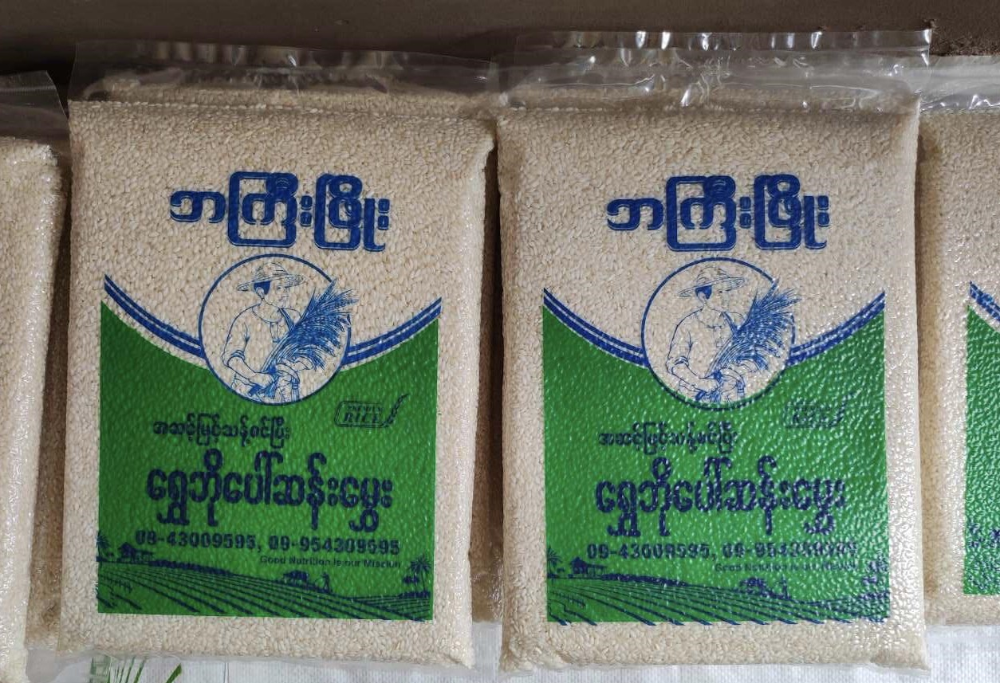

ရွှေဘိုပေါ်ဆန်းမွှေးထူးရှယ်
၂၄ပြည်(48kg)
၈၀၀၀၀ ကျပ်

ရွှေဘိုပေါ်ဆန်းမွှေးထူးရှယ်
၁၂ပြည်(24kg)
၄၀၀၀၀ ကျပ်

ရွှေဘိုပေါ်ဆန်းမွှေးထူးရှယ်
၆ပြည်(12kg)
၂၀၀၀၀ ကျပ်

ရွှေဘိုပေါ်ဆန်းမွှေးထူးရှယ်
၁ပြည်(2kg)
၃၅၀၀ ကျပ်